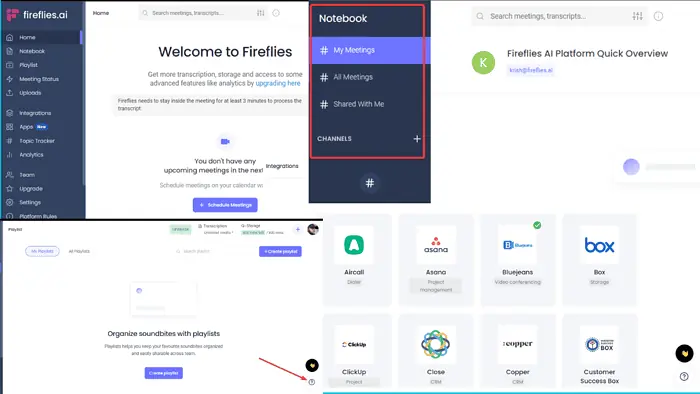
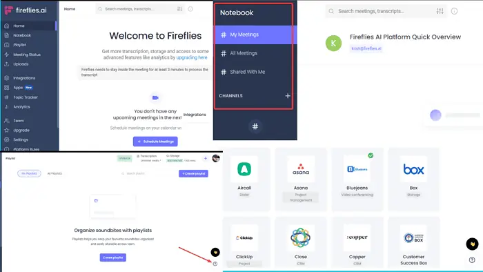

Fireflies es un asistente de reuniones de inteligencia artificial que elimina la necesidad de tomar notas durante una reunión. Sirve para grabar, transcribir y buscar fácilmente a través de las conversaciones de voz en una plataforma intuitiva de usar Fireflies se integra con tu calendario y plataformas de reuniones como Google Meet, Zoom o Microsoft Teams, convirtiéndose en un asistente virtual que se une a tus reuniones, graba, transcribe y resume los puntos clave discutidos.
Trabajar en equipo se vuelve un proceso sin problemas, agrega comentarios o marca partes específicas de las llamadas, para colaborar con tus compañeros sobre momentos importantes de tus conversaciones.
La mejor parte puede ser la funcionalidad de búsqueda, que te permite revisar una llamada de 1 hora en menos de 5 minutos. Busca entre los elementos y otros destacados importantes. Y dejar comentarios sobre cosas dichas en la reunión.
Además, puedes habilitar a Fireflies para que complete tu CRM, registrando notas de llamadas, actividades y grabaciones en los contactos correspondientes de su CRM.
Esta aplicación puede también crear tareas con comandos de voz en aplicaciones como Asana, Trello y Monday.com a partir de los comandos de voz usados durante las reuniones.
OpenAI, la empresa responsable del desarrollo de esta inteligencia artificial, cuenta con una página web oficial que ofrece acceso a DALL-E. El único requisito es registrarse en OpenAI, un proceso similar al necesario para utilizar ChatGPT. De esta manera, puedes utilizar ambas inteligencias artificiales con una única cuenta.
Una vez identificado/a, ingresa a la página web de DALL-E, donde dispondrás de varios créditos gratuitos para probar la IA. En esta interfaz, encontrarás una barra donde podrás escribir tus solicitudes, tanto en español como en inglés.
Después de redactar tu solicitud, simplemente haz clic en el botón 'Generate'. DALL-E tardará unos segundos para presentarte 4 imágenes que representen lo que le has pedido que dibuje. Posteriormente, puedes realizar nuevas peticiones o agregar más detalles a la solicitud original para afinarla. También tienes la opción de solicitarle que genere nuevas imágenes a partir del mismo prompt.

Pero, ¿cuáles son las aplicaciones de Chat GPT? Algunas de las aplicaciones para las que puedes utilizar Chat GPT (además de para pasar un rato entretenido haciéndole preguntas) se van a comentar a continuación:
Generación de texto
Con GPT se puede generar textos coherentes y bien escritos en una amplia gama de estilos, temas e idiomas. Además, se pueden generar resúmenes de noticias, descripciones de productos o historias.
Resolución de problemas
Gracias a este chat se pueden analizar problemas y generar soluciones o respuestas a preguntas.
Generación de contenido para chatbots
GPT se puede utilizar para generar respuestas apropiadas y coherentes para un chatbot en una amplia gama de contextos.
Generación de contenido para redes sociales
Se puede ser utilizar para generar publicaciones y mensajes atractivos para redes sociales.
Generación de contenido para aplicaciones de productividad
Con GPT se pueden generar informes, correos electrónicos y otro tipo de contenido para aplicaciones de productividad.
Análisis de datos
Gracias a chat GPT se pueden analizar grandes conjuntos de datos y extraer información valiosa de ellos.


 
